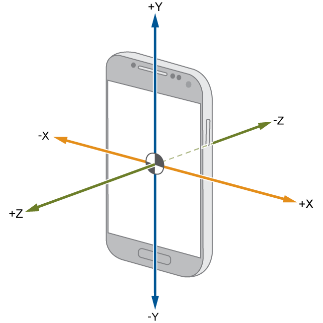
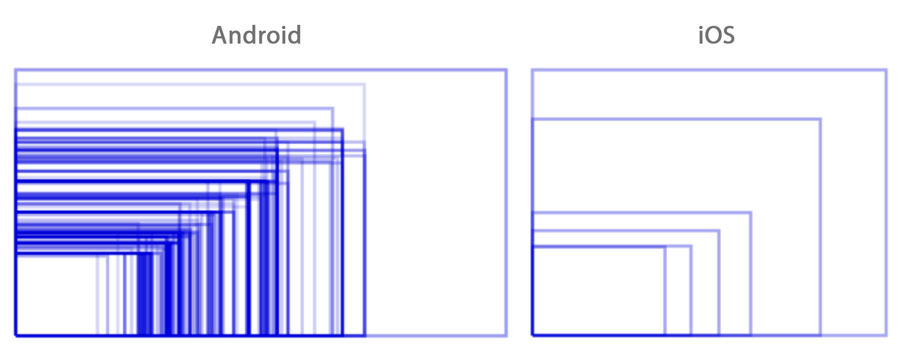
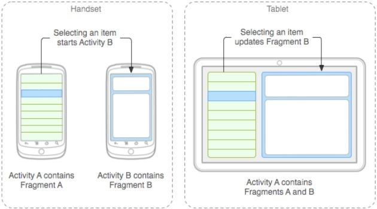

Введение
Сегодня сложно представить повседневную жизнь без современных приборов. К таким приборам относятся: стиральная машина, микроволновая печь, компьютеры и тд.. Но главным прибором, без которого сложно представить повседневную жизнь современного человека, является, конечно, смартфон. Ведь, с их помощью мы не только разговариваем по телефону или обмениваемся сообщениями, но и слушаем музыку, смотрим фильмы и сериалы, играем в игры, сидим в интернете, делаем фото и читаем книги. Функционал современных телефон просто огромен. По состоянию на июнь 2020 года, смартфонами пользуется 66.6% населения Земли.
Отчет компании Hootsuite за Июнь 2020 года
Кому понадобится разработка приложений под Android
Популярность Android приложений с каждым годом только растёт и приносит их владельцам всё больше прибыли. К примеру, по данным Sensor Tower, в 2020м году выручка Google Play, в сравнении с предыдущим годом, увеличилась на 30%.
-
Корпоративному бизнесу
Приложение поможет автоматизировать рабочие процессы, создать удобную платформу для взаимодействия с клиентами и персоналом, быстро получать обратную связь и анализировать эффективность работы.
-
E-commerce
Мобильное приложение поможет привлечь новых покупателей, рекламировать новые товары.
-
Стартап
Поможет быстро вывести идею на рынок и получить первую прибыль, заинтересовать инвесторов и изучить свою аудиторию с помощью внутренней статистики приложения.
Кому понадобится разработка приложений под Android
Приложение поможет автоматизировать рабочие процессы, создать удобную платформу для взаимодействия с клиентами и персоналом, быстро получать обратную связь и анализировать эффективность работы.
Мобильное приложение поможет привлечь новых покупателей, рекламировать новые товары.
Возможность охватить большую целевую аудиторию, т.к. смартфоны есть у большинства населения планеты.
Есть возможность реализовать функции, которые помогут поддерживать связь с пользователями и увеличить продажи.
Специфика разработки мобильных приложений с нуля
Разработка android-приложения непростая задача, т.к. нужно знать несколько моментов.
- Большая фрагментация устройств
Это хорошо для пользователей, однако непросто для разработчиков. Аппаратно у смартфона может быть фронтальная камера, а может и не быть. Симкарт может быть любое количество, физические кнопки могут присутствовать или нет, экранов может быт несколько.Существующие элементы могут быть так же разные, например, акселерометр у всех может быть установлен в нескольких вариантах.
Расположение осей акселерометра
Размер экрана так же является большой проблемой. Например , если вам нужно разместить изображение на весь экран iOS, вы используете несколько изображений под типовые размеры iPhone 6 и выше, iPhone 6 Plus и выше, iPhone X и iPhone X Max. В случае же с Android экраны имеют разные разрешения, соотношение сторон и плотность.Схематичная демонстрация основных размеров экранов Android и iOS
-
Большое количество видов операционной системы Android
При разработке необходимо учитывать особенности отображения вашего интерфейса на разных версиях ОС и оболочках. На разных версиях интерфейс может выглядеть по разному.Более того, google активно разрабатывают свою систему, удаляют уязвимости и совершенствуют существующие компоненты ОС, из-за чего функции доступные на одной версии ОС могут быть недоступны на другой. Например, до версии 6.0 приложения не должны были запрашивать каждое разрешение отдельно (доступ к камере, микрофону и так далее), они указывались списком в Google Play и, подразумевалось, что пользователь ознакамливается с ними до момента загрузки. Начиная с 6.0 каждое разрешение должно быть запрошено отдельно уже в момент работы приложения. Соотвественно, если вы не реализовываете оба варианта логики при разработке мобильного приложения андроид, оно не будет работать либо до версии 6.0, либо в более поздних.В последних видах ОС добавилась многозадачность рабочей области. Пользователь может отобразить на рабочей области одновременно несколько приложений и вашему может быть выделена совершенна произвольная по размеру область. Это также надо учитывать при создании приложений.
-
Архитектура самого приложения
В отличие от iOS, где приложения архитектурно представляют собой нечто единое целое, в Android они собираются из логически самостоятельных и обособленных частей – активити и фрагментов.Такой подход был создан как раз для того, чтобы обеспечить работу приложений на совершенно любых мобильных, в том числе с очень малым объемом оперативной памяти и очень слабыми процессорами. Если части приложения независимы, любую из них можно в нужный момент выбросить из памяти и не тратить на поддержание ее жизненного цикла драгоценные ресурсы.
Активити и фрагменты
Выводы
Смартфоны есть у большинства людей на планете, а одной из самых популярных операционных систем является OS Android. Приложения на android помогут получить дополнительную прибыль или помогут получить первую прибыль стартапу.
Разработка же android-приложений является непростой задаче из-за большой вариативности аппаратных и программных составляющих, которые нужно поддерживать в каждом приложении.